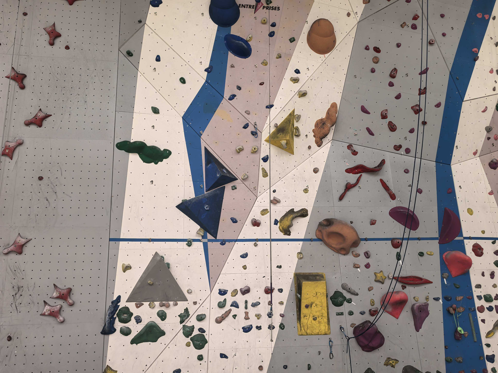
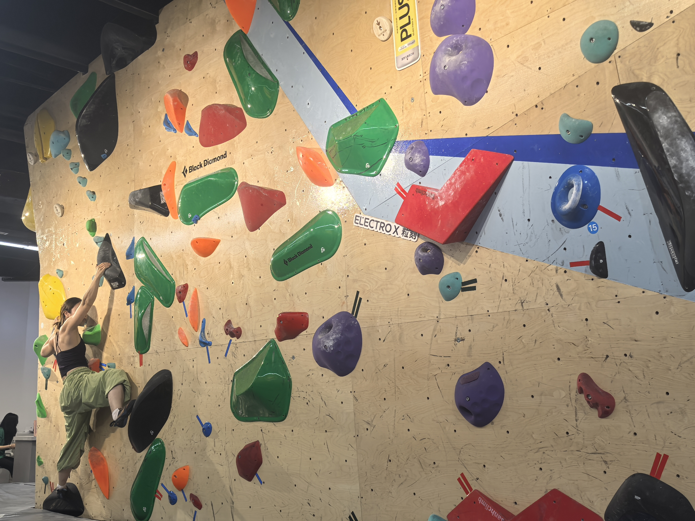
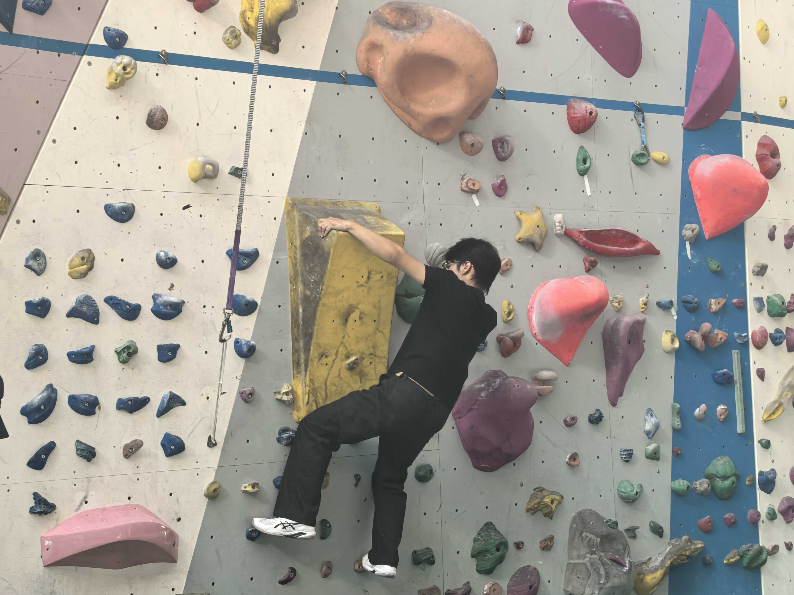
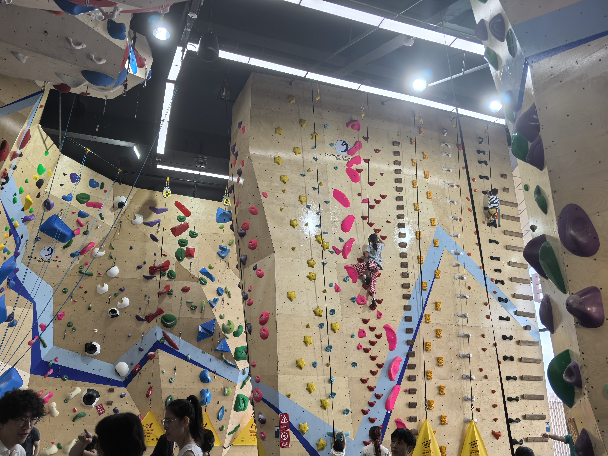

Finding 1 - Route selection is the clearest pain point
Evidence: 25 users reported route selection problems.
Users
From field observation and survey evidence to ClimbQuest's core user requirements.
We visited indoor climbing spaces to observe real route layouts, wall density, and how climbers interact with route choices.




We used the poster survey data consistently to define the clearest user problems and expected product functions.
The personas connect survey evidence to the users ClimbQuest needs to support: regular beginners who need confidence and low-frequency climbers who need fast re-entry.
Age 22, university student, indoor beginner.
Age 27, working professional, low-frequency climber.
The journey map helped identify moments of hesitation, route confusion, and post-climb drop-off, which informed our three core requirements.

Users should receive route suggestions that match their climbing ability, preference, confidence, and goals.
Users should be able to create and record custom routes by selecting holds on a wall image.
Users should be able to share, browse, like, comment on, and try community-created routes.
This traceability table makes the Week 9 alignment explicit: user evidence connects to requirements, design goals, and implemented system features.
| User Evidence | Requirement | Design Goal | System Feature |
|---|---|---|---|
| 25 users reported route selection problems | R1 Personalized route guidance | DG1 Reduce route-selection uncertainty | SF1 Personalized Route Recommendation |
| 20 users reported recording method problems; 26 expected share / record route functions | R2 DIY route creation | DG2 Increase creative ownership | SF2 DIY Route Creation |
| Users showed interest in sharing routes and community interaction | R3 Community sharing | DG3 Support social motivation | SF3 Community Sharing & Interaction |